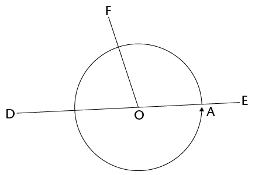

In Grade 8 you identified relationships between angles on straight lines. In this chapter, you will revise all of the angle relationships and write clear descriptions of them.
12.1 Angle relationships 221
12.2 Identify and name angles 230
12.3 Solving problems 232


12 Geometry of straight lines
12.1 Angle relationships
Remember that 360\(^\circ\) is one full revolution.
If you look at something and then turn all the way around so that you are looking at it again, you have turned through an angle of 360\(^\circ\). If you turn only halfway around, so that you look at something that was right behind your back, you have turned through an angle of 180\(^\circ\).
1. Answer the questions about the figure below.

(a) Is angle FOD in the figure smaller or bigger than a right angle?
(b) Is angle FOE in the above figure smaller or bigger than a right angle?
On the figure above, F
 D + F E = half of a revolution =
180\(^\circ\).
D + F E = half of a revolution =
180\(^\circ\).
The sum of the angles on a straight line is 180\(^\circ\).
When the sum of angles is 180\(^\circ\), the angles are called supplementary.
2. C A in the figure below is 75\(^\circ\). AMB is a straight line.

(a) How big is C
 B?
B?
(b) Why do you say so?
3. P  B in the figure in question 2 is
40\(^\circ\).
B in the figure in question 2 is
40\(^\circ\).
How big is C P?
Explain your reasoning.
4. In the figure below,
AMB is a straight line and A  C and B
C and B  C are equal angles.
C are equal angles.
(a) How big are these angles?
(b) How do you know this?

When one line forms two equal angles where it meets another line, the two lines are said to be perpendicular.
5. In the figure below, lines AB and CD intersect at point M.

(a) Does it look as if C  A and B
A and B  D are equal?
D are equal?
In this chapter, you arerequired to give goodreasons for every statement you make.
In this chapter, you arerequired to give goodreasons for every statement you make.
(b) Can you explain why they are equal?
(c) What does C  A + D
A + D  A equal?
A equal?
Why do you say so?
(d) What is C  A + C
A + C  B?
B?
Why do you say so?
(e) Is
it true that C  A + D
A + D  A = C
A = C  A + C
A + C  B?
B?
(f) Which angle occurs on both sides of the equation in (e)?
6. Look carefully at your answers to questions 5(c) to 5(e).
Now try to explain your observation in question 5(a).
7. In the figure below, AB and CD intersect in M. Four angles are formed. Angle CMB and angle AMD are called vertically opposite angles. Angle CMA and angle BMD are also vertically opposite.
When two straight lines intersect, the vertically opposite angles are equal.

(a) If angle BMC = 125\(^\circ\), how big is angle AMD?
(b) Why do say so?
lines and angles
Aline that intersects other lines is called a transversal.

In the above pattern, AB is parallel to CD and EF \(||\) GH \(||\) KB \(||\) LD.
1. Angles a, b, c, d, and e are corresponding angles. Do the corresponding angles look appear to be equal?
2. Investigate whether the corresponding angles are equal by using tracing paper. Trace the angle you want to compare to other angles and place it on top of the other angle to find out if they are equal. What do you notice?
Only d = e
3. Angles f, h, j, m and n are also corresponding angles. Identify all the other groups of corresponding angles in the pattern.
4. Describe the position of corresponding angles that are formed when a transversal intersects other lines.
5. The following are pairs of alternate angles: g and o; j and s; and k and r.
Do these angles appear to be equal?
Yes
6. Investigate whether the alternate angles are equal by using tracing paper. Trace the angle you want to compare and place it on top of the other angle to find out if they are equal. What do you notice?
7. Identify two more pairs of alternate angles.
m and u; h and q; f and p
8. Clearly describe the relative position of alternate angles that are formed when a transversal intersects other lines.
9. Did you notice something about some of the pairs of corresponding angles when you did the investigation in question 6? Describe your finding.
10. Angles f and o; i and q and k and s are all pairs of co-interior angles. Identify three more pairs of co-interior angles in the pattern.

g and p; j and r; m and t; v and h
The angles in the same relative position at each intersection where a straight line crosses two others are called corresponding angles.
angles formed by parallel lines
Corresponding angles
The lines AB and CD below never meet. Lines that never meet and are at a fixed distance from one another are called parallel lines. We write AB \(||\) CD.
Parallel lines have the same direction, i.e. they form equal corresponding angles with any line that intersects them.

The line EF cuts AB at G and CD at H.
EF is a transversal that cuts parallel lines AB and CD.
1. (a) Look carefully at the angles EGA and EHC in the above figure. They are called corresponding angles. Do they appear to be equal?
(b) Measure the two angles to check whether they are equal. What do you notice?
2. Suppose E
 A and E
A and E  C are really equal. Would E
C are really equal. Would E
 B and E
B and E  D then also be equal? Give reasons to
support your answer.
D then also be equal? Give reasons to
support your answer.
When two parallel lines are cut by a transversal, the corresponding angles are equal.
Alternate angles
The angles B  F and C
F and C  E below are called alternate
angles. They are on opposite sides of the transversal.
E below are called alternate
angles. They are on opposite sides of the transversal.

3. Do you think angles AGF and DHE should also be called alternate angles?
4. Do you think alternate angles are equal? Investigate by using the tracing paper like you did previously, or measure the angles accurately with your protractor.
What do you notice?
When parallel lines are cut by a transversal, the alternate angles are equal.
5. Try to explain why alternate angles are equal when the lines that are cut by a transversal are parallel, keeping in mind that corresponding angles are equal.
By answering the following questions, you should be able to see how you can explain why alternate angles are equal when parallel lines are cut by a transversal.
6. Are angles B
 H and D
H and D  F in the figure corresponding angles?
F in the figure corresponding angles?
What do you know about corresponding angles?

7. (a) What can you say about B
 H + A
H + A  H? Give a reason.
H? Give a reason.
(b) What can you say about D
 G + C
G + C  G? Give a reason.
G? Give a reason.
(c) Is it true that B  H + A
H + A  H = D
H = D  G + C
G + C  G? Explain.
G? Explain.
(d) Will the equation in (c) still be true
if you replace angle B  H on the left-hand side with angle C
H on the left-hand side with angle C
 G?
G?
8. Look carefully at your work in question 7 and write an explanation why alternate angles are equal, when two parallel lines are cut by a transversal.
Co-interior angles
The angles A
 H and C
H and C  G in the figure below are called
co-interior angles.
G in the figure below are called
co-interior angles.
"co-" means together.
"co-interior" means on the same side.
They are on the same side of the transversal.

9. (a) What do you know about C
G + D  G? Explain.
G? Explain.
(b) What do you know about B
 H + A
H + A  H? Explain.
H? Explain.
(c) What do you know about B
 H + C
H + C  G? Explain.
G? Explain.
(d) What conclusion can you draw about A
 H + C
H + C  G?
G?
Give detailed reasons for your conclusion.
When two parallel lines are cut by a transversal, the sum of two co-interior angles is 180\(^\circ\).
12.2 Identify and name angles
1. In the figure below, the line RF is perpendicular to AB.

(a) Is RF also perpendicular to CD? Justify your answer.
(b) Name four pairs of supplementary angles in the figure. In each case say how you know that the angles are supplementary.
(c) Name four pairs of co-interior angles in the figure.
(d) Name four pairs of corresponding angles in the figure.
(e) Name four pairs of alternate angles in the figure.
2. Now you are given that AB and CD in the figure below are parallel.
 (a) If it is also given that RF is
perpendicular to AB, will RF also be perpendicular to CD?
Justify your answer.
(a) If it is also given that RF is
perpendicular to AB, will RF also be perpendicular to CD?
Justify your answer.
(b) Name all pairs of supplementary angles in the figure. In each case say how you know that the angles are supplementary.
(c) Suppose E  A = x. Give the size of as many
angles in the figure as you can, in terms of x. Each time give a reason for
your answer.
A = x. Give the size of as many
angles in the figure as you can, in terms of x. Each time give a reason for
your answer.
12.3 Solving problems
1. Line segments AB and CD in the figure below are parallel. EF and IJ are also parallel. Mark these facts on the figure, and then answer the questions.
When you solve problems in geometry you can use a shorthand way to write your reasons. For example, if two angles are equal because they are corresponding angles, then you can write (corr \(\angle\)s, AB \(||\) CD) as the reason.

(a) Name five angles in the figure that are
equal to G  D. Give a reason for each of your
answers.
D. Give a reason for each of your
answers.
(b) Name all the angles in the figure that
are equal to A  H. Give a reason for each of your
answers.
H. Give a reason for each of your
answers.
2. AB and CD in the
figure below are parallel. EF and IJ are also parallel. N
 B = 80\(^\circ\) andJ
B = 80\(^\circ\) andJ  F = 40\(^\circ\).
F = 40\(^\circ\).

Find the sizes of as many angles in the figure as you can, giving reasons.
3. In the figure below,
AB \(||\) CD; EF \(||\) AB; JR
\(||\) GH. You are also given that P  N = 60\(^\circ\),R
N = 60\(^\circ\),R  D = 50\(^\circ\).
D = 50\(^\circ\).

(a) Find the sizes of as many angles in the figure as you can, giving reasons.
(b) Are EF and CD parallel? Give reasons for your answers.